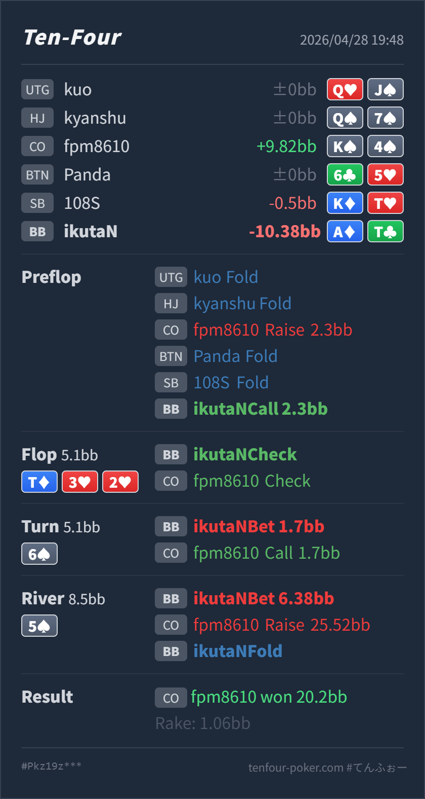

Preflop
良いA♦T♣ は call で扱いやすい上側の defend hand です。
GTO基準で大きく悪いのは river raise への fold ではなく、river 5♠ で A♦T♣ を 6.38BB into 8.5BB まで大きく value bet した点です。BB defend、flop check、turn small probe は自然です。ただし turn call を「T hit か flush draw」に寄せすぎると、4x の gutshot、5x/6x、slowplay した強い hand が抜けます。river の raise に対する fold は、相手の bluff がかなり必要になる一方で実戦の raise range が 4x に寄りやすいため、かなり良い判断です。
A♦T♣K♠4♠T♦ 3♥ 2♥ / 6♠ / 5♠A♦T♣ は CO 2.3BB open に対して call で問題ありません。CO open が小さめなので、BB defend はやや広く見てよいです。T♦ 3♥ 2♥ は Hero が top pair top kicker を持っていますが、CO の flop check back には air だけでなく、Tx、pocket pair、gutshot、heart draw、slowplay が残ります。6♠ の 1.7BB probe は良いです。CO が flop check したあと、Hero は Tx で value/protection を取りにいけます。5♠ は flush は外れていますが、4x が一枚で straight になります。A♦T♣ の大きめ value bet は thin で、raise された後は bluff-catch に回せるほど強くありません。A♦T♣K♠4♠2.3BB, BTN fold, SB fold, BB callT♦ 3♥ 2♥ / 6♠ / 5♠1.7BB, CO call6.38BB, CO raise 25.52BB, BB fold20.2BB
良いA♦T♣ は call で扱いやすい上側の defend hand です。
T♦ 3♥ 2♥良い
Hero は top pair top kicker でかなり良い bluff-catcher / thin value hand です。
6♠良いA♦T♣ は多くの Tx、pair、draw に勝っており、value/protection があります。
5♠bet は薄い、fold は良いA♦T♣ は showdown value のある top pair ですが、大きい bet に raise された後は bluff-catcher の下側です。
| 論点 | その場で置いた見立て | どこがズレたか | 次回の基準 |
|---|---|---|---|
| turn call range | 安い bet に call してきたので、Tx か draw が中心に見える | それ自体は近いですが、4x の gutshot、5x/6x、pocket pair、slowplay も残ります。特に 4x は river 5 で一気に強くなります。 | small probe に call されたら、pair/draw だけでなく「次の river で nut 化する gutshot」を必ず残す |
| river large value | worse Tx なら 75% でも call してくれそうに見える | 5♠ は one-card straight card なので、worse Tx は call しにくくなり、相手の raise range はかなり強くなります。 | scare river の top pair value は、小さめで worse を広く呼ぶか、check-call 寄りにして raise を受けない形を優先する |
| ストリート | その時点の見え方 | 実ハンドの位置づけ | 評価 | その場の一手 |
|---|---|---|---|---|
| Preflop | CO open に対して BB は広く defend できます。CO 2.3BB はやや小さめなので、offsuit broadway / ATo 付近は十分 defend 圏内です。 | A♦T♣ は call で扱いやすい上側の defend hand です。 | 良い | call で問題ありません。3bet も混ぜ得ますが、call が自然です。 |
Flop T♦ 3♥ 2♥ | CO は range advantage を持ちますが、check back により強い overpair だけでなく弱い showdown hand や draw も残ります。BB は Tx、low pair、straight draw、heart draw を持てます。 | Hero は top pair top kicker でかなり良い bluff-catcher / thin value hand です。 | 良い | check は自然です。CO が check したことで、turn 以降は value/protection を取りにいけます。 |
Turn 6♠ | 45 は straight になり、4x は river 5 で強くなる gutshot です。CO の check back range はまだ広く、small probe に対して多くの hand が続けます。 | A♦T♣ は多くの Tx、pair、draw に勝っており、value/protection があります。 | 良い | 1.7BB は問題ありません。もう少し大きく打ってもよいですが、small で広く call させる方針も成立します。 |
River 5♠ | flush は外れた一方、4x が一枚で straight です。CO の turn call には A4s/K4s/Q4s/44 など薄くても十分残ります。 | A♦T♣ は showdown value のある top pair ですが、大きい bet に raise された後は bluff-catcher の下側です。 | bet は薄い、fold は良い | value を取るなら小さめが扱いやすいです。実戦の大きめ bet に raise が返った後は fold で問題ありません。 |
4x が一枚で straight になる river では、missed draw より made hand の raise 密度を先に見ます。4x が自然に完成する runout では、A♦T♣ の fold はかなり堅実です。4x blocker を持っていないため、call の優先度は高くありません。